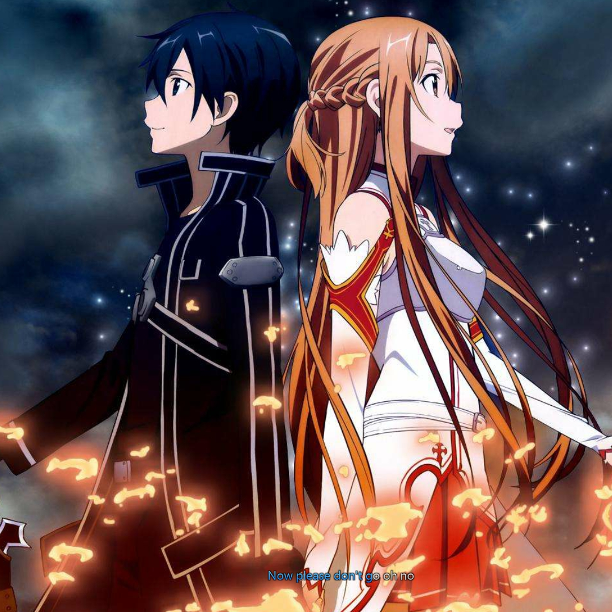

音乐名
曾经，大地受黑白两棵“圣大树”的加护而保持万物均衡。
供奉“黑之圣大树”的黑精灵族建立起了“琉斯拉王国”，供奉“白之圣大树”的森林精灵建立了“卡雷斯奥王国”
凭借圣大树的加护和强大的魔法，王国一片繁荣。除了这两个国家之外，还有人族建立的“九联合王国”、矮人族建立的“亚乌尔尼达地下王国”，
以及其他少数种族居住的中小型国家，这些国家长期保持着和平。
但是某天，想要获得即使用刀割也不会受伤的身体的精灵一族，打算划破圣树、取得树的汁液。
他们的计划遭到了阻止，精灵一族被逐出他们所在的两个王国。
在黑精灵的传说当中他们是森林精灵，在森林精灵的传说中则为黑精灵，最后两边都将其称为“堕落精灵（Fallen Elf）”。
被放逐到北方的冰雪地带的堕落精灵们憎恨两王国，为了发动战争，长年累月地在暗中活动着。
两国之间的关系逐渐紧张起来，以琉斯拉王国的公主暗杀未遂的事件为契机，两国最终断绝了往来。
人类的九联合王国、矮人的地下王国也和精灵二国一样开始分裂，大地陷入了前所未有的紧张局面。
接着，战争终于爆发，在两王国的魔导师们想要放出最大规模的攻击魔法时，异变发生了。
直径十千米的光环圈住了化为战场的原野，将其从大地上切除、漂浮在空中。
不只战场，琉斯拉、卡雷斯奥两个王国，九联合王国，地下王国的首都和主要城市全都被光环切离大地。
“圆盘”数量达到一百多个，将上面众多的精灵、人类和矮人送升上高空之后，圆盘垂直地堆积起来。此后，这个事件被人们称为“大地切断”，艾恩格朗特由此诞生。
失去了圣大树的加护的艾恩格朗特几乎失去了所有的魔法，无论用多大的力气拉动弓弦，箭也不会笔直地飞出去。
从那以后经过了漫长的岁月，知道大地切断的故事的只有精灵族的后裔了。
艾恩葛朗特
飘浮在无限苍穹当中的巨大岩石与钢铁城堡。最底层区域的直径大约有十公里，足以轻圝松容纳下整个世田谷区。
再加上堆积在上面百层左右的楼层，其宽广的程度可说超乎想像。空间内部有好几个都市、为数众多的小型 街道与村落、森林和草原，甚至还有湖的存在。
而连接每个楼层之间的阶梯只有一座，阶梯还都位于充斥怪物的危险迷宫区域之中，因此要发现并通过阶梯可以说是相当困难。
但只要有人能够突破阻碍抵达上面的楼层，上下层各都市的「转移门」便会连结起来，人们也就可以自圝由来去两个楼层之间。
城堡的名称是「艾恩葛朗特」。这座持续飘浮在空中、吞噬了将 近六千人充满着剑与战斗的世界。
它的另一个名字是—「Sword Art Online刀剑神域」
在艾恩葛朗特事件开始以后玩家分为了6种派系。
第一种大约占了五成，他们不相信茅场晶彦提出的获救条件，等待着外部救援的人们，惶惶不可终日。
亚丝娜最初也是这样选择的，不过她最终还是鼓起勇气，抱着输给怪物而死去也不要输给这个世界的觉悟去战斗
第二种大约有三成玩家组成了军队，主张应该尽量共享情报和资源，团结全体玩家共同攻略死亡游戏，但在第25层头目战死伤惨重后就不再积极攻略。
因公会行事作风太一板一眼而被戏称为“军队”，但事实上内部的确也采行了军队式的阶级管理。
基本上负责维持已攻略楼层的秩序，将逮捕的犯罪玩家囚禁在第一层的据点“黑铁宫”内。原本名称是“MTD”，MMOTODAY的简称，后来才被副会长牙王改名为ALF
第三种大约有一千人左右，这是群一开始便毫无计划性地浪费珂尔，但又提不起劲跟怪物作战来获得物资，生活因此陷入困顿的人。
把起始之城镇的贫民窟当成根据地，开始干起强盗这种勾当来。
而第四种玩家，人数只有寥寥数百人。这些玩家被称之为攻略组，他们善用军队所没有的机动力，来进行确实的攻略与战力增强行动。
攻略组的成员基本都是“SAO”中的顶级玩家，他们并不和其他普通玩家一样惧怕死亡而躲在低层区域，而是以达到100层红玉宫以及通关“SAO”作为目标。
第五种玩家，选择锻造师、商人、情报贩子等职业。虽然他们只有大约两、三百人的规模，但他们也组成了自己的公会，为了赚取生活所需的珂尔而进行技能的修行
第六种玩家，则剩下不到一百个的人，则是桐人所隶属的团体一人称「独行玩家」的一群人。这是认为不属于任何派系、只靠独自一人来进行强化，才是最有效生存手段的利己主义团体。
这些人几乎全是封闭测试的参加者。运用他们的知识从游戏一开始就全力冲刺，在短期间内便提升了自己的等级。
次世代飞行型MMO，以有着“精灵国度”意义的阿尔普海姆大陆为舞台
大略可与分为9个区域，每个区域都有其所属精灵种族的首都，
也都具备特殊的外观与种族文化。
9个种族分别是以飞行速度与听力见长的风精灵
擅长使用武器与攻击的火精灵 擅长恢复魔法与水中活动的水精灵
耐久力与采掘异常优秀的大地精灵 拥有驯兽与敏捷能力的猫妖
专长是寻宝以及幻惑魔法的守卫精灵 擅长演奏乐器与歌唱的音乐精灵
擅长生产武器与工艺的小矮妖 能在黑暗中飞行与拥有夜视能力的黑暗精灵。
阿尔普海姆中央耸立在所有玩家的最终目的地“世界树”
而世界树根部则有世界之大的都市“央都阿鲁恩”存在。
“世界树”上面据说有传说中的空中都市
而如果有种族能够谒见住在那里面的“妖精王奥伯龙”
就可以转生为高等种“光之精灵”。
只要能转生为真正的“光之精灵”
就能解除系统上的滞空限制而持续不断飞行
进而成为这片无限天空名副其实的支配者。
Alfheim Online（アルヴヘイム・オンライン）”缩写为“ALO”，北欧神话中妖精国度的意思。
由结城家旗下的子公司“RECT Progress”营运，核心技术源自从“ARGUS”接收的「Sword Art Online」，拥有相同的角色数据储存格式。
最大特征是所有的玩家都拥有有限的飞行能力，能体验以肉身翱翔天际的感觉。设定上玩家分成9个精灵族，以进化成“光之精灵”为目标，朝被称为“世界树”的巨大树木顶点迈进。
属于技巧制的游戏，等级给予的HP加成很低，技能熟练度不计入攻击力公式，只有透过反复磨练操作技术才能加强实力。
战斗上相当仰赖玩家的运动神经，且鼓励不同种族之间的PK，游戏难度相当的高。没有SAO 的剑技系统，但有“魔法”的存在。
由于须乡伸之的阴谋，世界树上只有囚禁从SAO释放出来而被非法截获的300多名幸存者（包括亚丝娜）的实验室，用于研究人脑实验和劫持亚丝娜。
但在须乡伸之的计划曝光后，负责ALO 营运的“RECT 制造”解散，ALO 也陷入停止营运的状态。
但ALO 的玩家之中有几位的本业是风险投资，他们组成新公司并以极低价向RECT 买下了ALO 的所有游戏资料，让ALO 以The Seed 的环境重新营运（不过ALO 实际上是使用完整版的Cardinal 系统）。
因RECT 所卖出的ALO 资料内意外地包含了SAO 的资料，让再次营运的ALO 除了有九成旧ALO玩家愿意留下之外，前SAO 玩家的账号也可转换过来，原ALO 玩家与前SAO 玩家的比例约为「7：3」。
经营方并根据SAO 的资料进行了一连串大规模系统升级，包括解除飞行的滞空限制、“世界树城”的实装、浮游城“艾恩葛朗特”与“剑技系统”的导入等，
并在此基础上开发了可让玩家自行录制招式的“原创剑技系统”。
此外，在玩家住宅中可以连结外部网络，因此可以收看由其他VRMMO 播送的网络节目。
Gun Gale Online 缩写为“GGO”
以“The Seed”创造出来的虚拟实境游戏之一
是在所有以“The Seed”创造来的游戏中最受欢迎的一种
类型为FPS（First-Person Shooter）
GGO最大的特色是游戏中的金钱可转换成真实世界可用的电子货币
但相对的每位玩家需支付每月三千日圆的连线费用
而绝大部分玩家每月只能拿回数百日圆
虽然赌博性质如此浓厚
但因由总部设在美国的“ZASKAR”公司营运，日本政府无法干预
除此之外，官方网站只有基本的游戏介绍
而实际公司所在等资料却毫无记载
大部分与游戏相关的操作都在游戏内进行
例如“The Bullet of Bullets”大赛的报名。
彩蛋页
记录整个网页过程中的抽象
以后如果可以的话，命名一定要起的正规且有意义一点
请务必提前规划好整体样式，不要想加就加
如果以后不打算做全覆盖，最好用浅色或者白色底，不用大堆图片去堆积背景再做元素适配真的太难啦
辛辛苦苦写了800行js，移植过来的时候报废80%，家人们谁懂啊！！
以后如果可以的话，最好别另起文档写内容，移植还得重新定位很痛苦。
菊冈诚二郎、比嘉健以Soul Translator（STL）
运用主观时间比例加速技术（
Subjective Time Rate Acceleration，简称STRA）
与The Seed开发的高质感虚拟世界，语出于《爱丽丝梦游仙境》
核心的量子演算回路源自茅场晶彦
透过量子通讯达成跟脑细胞细胞骨架的量子光——被认为是灵魂——沟通
内中的生物皆是以STL复制婴儿的“摇光”（Fluctlight）而培养出来的AI
有着与真实人类同样的丰富情感表现与思维。
通过起初的16名婴儿的灵魂摇光复制体培育并发展成大约8万人的文明
最终目的是发展高度人工智能（Bottom-up AI）用以发展无人兵器。
将桐人被以测试次世代完全潜行机器的打工名义诱骗来当测试员
在桐人受金本敦攻击而昏迷送医后
将其转移至秘密设施Ocean Turtle
并强行进行Under World完全潜行
已完成脑损伤治疗。
此“游戏”并没有一般游戏所谓的“等级”、“HP”、“经验值”等
只有 “天命”Durability“ “物件操作权限”Object Control Authority “系统操作权限”System Control Authority
部分用语是参照现实语言转换而来